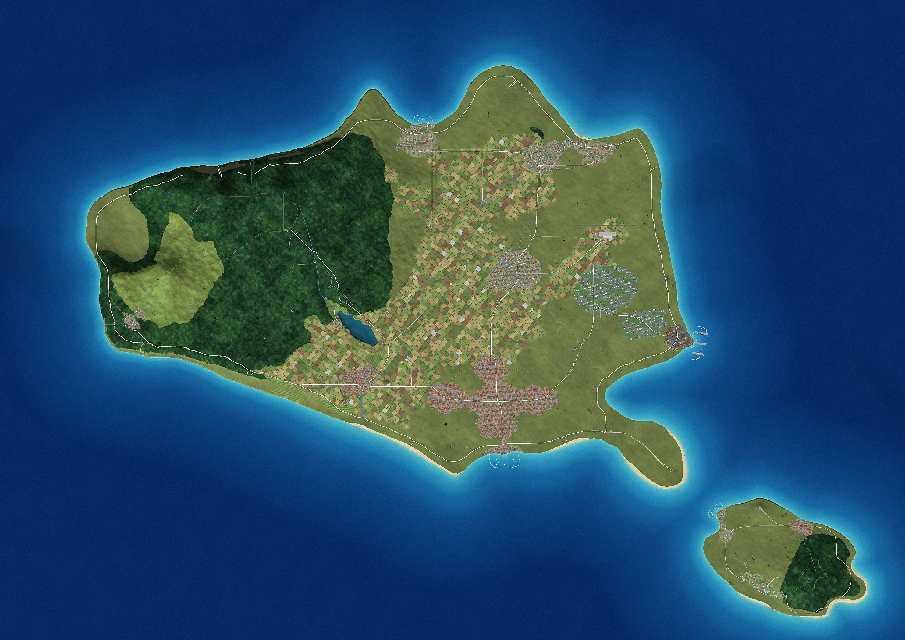
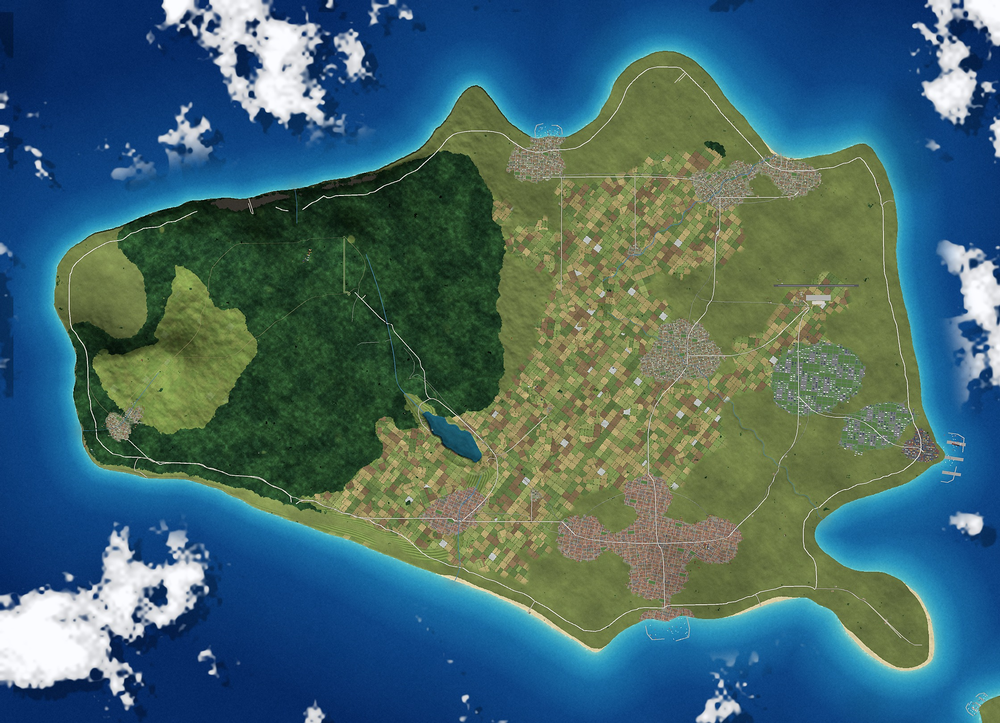

01 · PŘEHLED
Hlavní ostrovy
Orientační přehled Larpidie a Paralandu.
 Larpidieostrovní atlas
Fiktivní stát
Larpidieostrovní atlas
Fiktivní stát
Souostroví v severozápadním Pacifiku
Britské pobřeží, japonské uličky a česká stopa uprostřed oceánu. Poznejte Larpidii — fiktivní ostrovní stát vytvořený pro školní projekt ZSV.

Larpidie & Paraland 01° · Tichý oceán ATLASMalá země, velký příběh
Larpidie je modelový stát na dvou ostrovech jižně od hlavních japonských ostrovů. Na hlavním ostrově se střídají zalesněné hory, malé obce, pobřežní pláže a město s historickým přístavem.
Její svět spojuje promyšlenou veřejnou dopravu, krátký pracovní týden, exportní průmysl a cestování, které počítá s přírodou i místními obyvateli.
Seznámit se se zemí ↗
JIŽNÍ POBŘEŽÍ · LARPINGTONKrajina protikladů
Na západě ostrova se zvedají lesnaté hory, vodopády a pěší stezky. Východní nížina hostí sídla a průmyslové zázemí; na jihu leží Larpington, hlavní město s historickým přístavem.
Otevřít atlas ↗Začněte objevovat
Vyberte si cestu: prohlédněte si mapy, projděte si obrazový balíček nebo si připravte podklady pro prezentaci.
Atlas & mapy
Od siluety obou ostrovů až po ulice hlavního města. Vyberte si mapu a objevujte detaily; v interaktivním atlasu můžete hledat místa, přibližovat a zapínat mapové vrstvy.
Mapová knihovna
Všechny mapy a pohledy z projektu na jednom místě. Vyberte mapu pro zobrazení ve větším formátu.
Orientační přehled Larpidie a Paralandu.
Lesnaté pohoří a horské údolí.
Menší ostrov a jeho okolí.
Všechna místa v orientačním mapovém registru.
Železnice, cesty a propojení ostrovů.
Městský úsek je v provozu. Podmořské spojení se dokončuje. Stav L1 a L2 není upřesněn.
Lesy, zemědělská půda a zastavěná území.
Simulovaná satelitní vizualizace Larpidie a Paralandu.
Lesnaté pohoří, jezero a horské údolí.
Menší turistický ostrov a jeho okolí.
Město a jeho pobřeží v atlasovém pohledu.
Orientační vizualizace města a pobřeží.
Mapy zachycují fiktivní svět orientačně. Nejde o skutečné družicové snímky ani GPS.
Obrazový příběh
Vybrané fotografie zachycují horskou krajinu a pobřežní život na ostrovech Larpidie.


Encyklopedie Larpidie
Poznejte její historii, přírodu, města, kulturu i to, jak stát funguje. Začněte rychlým přehledem a pokračujte k tématům, která vás zaujmou.